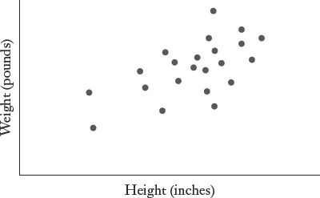
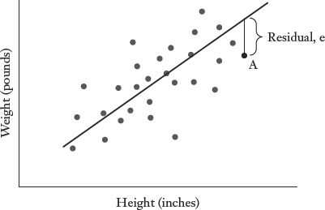
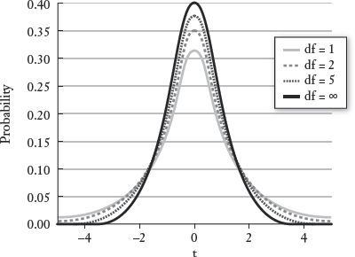
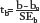

Can stress on the job kill you? Yes. There is compelling evidence that rigors on the job can lead to premature death, particularly of heart disease. But it’s not the kind of stress you are probably imagining. CEOs, who must routinely make massively important decisions that determine the fate of their companies, are at significantly less risk than their secretaries, who dutifully answer the phone and perform other tasks as instructed. How can that possibly make sense? It turns out that the most dangerous kind of job stress stems from having “low control” over one’s responsibilities. Several studies of thousands of British civil servants (the Whitehall studies) have found that workers who have little control over their jobs—meaning they have minimal say over what tasks are performed or how those tasks are carried out—have a significantly higher mortality rate than other workers in the civil service with more decision-making authority. According to this research, it is not the stress associated with major responsibilities that will kill you; it is the stress associated with being told what to do while having little say in how or when it gets done.
This is not a chapter about job stress, heart disease, or British civil servants. The relevant question regarding the Whitehall studies (and others like them) is how researchers can possibly come to such a conclusion. Clearly this cannot be a randomized experiment. We cannot arbitrarily assign human beings to different jobs, force them to work in those jobs for many years, and then measure who dies at the highest rate. (Ethical concerns aside, we would presumably wreak havoc on the British civil service by randomly distributing jobs.) Instead, researchers have collected detailed longitudinal data on thousands of individuals in the British civil service; these data can be analyzed to identify meaningful associations, such as the connection between “low control” jobs and coronary heart disease.
A simple association is not enough to conclude that certain kinds of jobs are bad for your health. If we merely observe that low-ranking workers in the British civil service hierarchy have higher rates of heart disease, our results would be confounded by other factors. For example, we would expect low-level workers to have less education than senior officials in the bureaucracy. They may be more likely to smoke (perhaps because of their job frustration). They may have had less healthy childhoods, which diminished their job prospects. Or their lower pay may limit their access to health care. And so on. The point is that any study simply comparing health outcomes across a large group of British workers—or across any other large group—will not really tell us much. Other sources of variation in the data are likely to obscure the relationship that we care about. Is “low job control” really causing heart disease? Or is it some combination of other factors that happen to be shared by people with low job control, in which case we may be completely missing the real public health threat.
Regression analysis is the statistical tool that helps us deal with this challenge. Specifically, regression analysis allows us to quantify the relationship between a particular variable and an outcome that we care about while controlling for other factors. In other words, we can isolate the effect of one variable, such as having a certain kind of job, while holding the effects of other variables constant. The Whitehall studies used regression analysis to measure the health impacts of low job control among people who are similar in other ways, such as smoking behavior. (Low-level workers do in fact smoke more than their superiors; this explains a relatively small amount of the variation in heart disease across the Whitehall hierarchy.)
Most of the studies that you read about in the newspaper are based on regression analysis. When researchers conclude that children who spend a lot of time in day care are more prone to behavioral problems in elementary school than children who spend that time at home, the study has not randomly assigned thousands of infants either to day care or to home care with a parent. Nor has the study simply compared the elementary school behavior of children who had different early childhood experiences without recognizing that these populations are likely to be different in other fundamental ways. Different families make different child care decisions because they are different. Some households have two parents present; some don’t. Some have two parents working; some don’t. Some households are wealthier or more educated than others. All of these things affect child care decisions, and they affect how children in those families will perform in elementary school. When done properly, regression analysis can help us estimate the effects of day care apart from other things that affect young children: family income, family structure, parental education, and so on.
Now, there are two key phrases in that last sentence. The first is “when done properly.” Given adequate data and access to a personal computer, a six-year-old could use a basic statistics program to generate regression results. Personal computing has made the mechanics of regression analysis almost effortless. The problem is that the mechanics of regression analysis are not the hard part; the hard part is determining which variables ought to be considered in the analysis and how that can best be done. Regression analysis is like one of those fancy power tools. It is relatively easy to use, but hard to use well—and potentially dangerous when used improperly.
The second important phrase above is “help us estimate.” Our child care study does not give us a “right” answer for the relationship between day care and subsequent school performance. Instead, it quantifies the relationship observed for a particular group of children over a particular stretch of time. Can we draw conclusions that might apply to the broader population? Yes, but we will have the same limitations and qualifications as we do with any other kind of inference. First, our sample has to be representative of the population that we care about. A study of 2,000 young children in Sweden will not tell us much about the best policies for early childhood education in rural Mexico. And second, there will be variation from sample to sample. If we do multiple studies of children and child care, each study will produce slightly different findings, even if the methodologies are all sound and similar.
Regression analysis is similar to polling. The good news is that if we have a large representative sample and solid methodology, the relationship we observe for our sample data is not likely to deviate wildly from the true relationship for the whole population. If 10,000 people who exercise three or more times a week have sharply lower rates of cardiovascular disease than 10,000 people who don’t exercise (but are similar in all other important respects), then the chances are pretty good that we will see a similar association between exercise and cardiovascular health for the broader population. That’s why we do these studies. (The point is not to tell those nonexercisers who are sick at the end of the study that they should have exercised.)
The bad news is that we are not proving definitively that exercise prevents heart disease. We are instead rejecting the null hypothesis that exercise has no association with heart disease, on the basis of some statistical threshold that was chosen before the study was conducted. Specifically, the authors of the study would report that if exercise is unrelated to cardiovascular health, the likelihood of observing such a marked difference in heart disease between the exercisers and nonexercisers in this large sample would be less than 5 in 100, or below some other threshold for statistical significance.
Let’s pause for a moment and wave our first giant yellow flag. Suppose that this particular study compared a large group of individuals who play squash regularly with those of an equal-sized group who get no exercise at all. Playing squash does provide a good cardiovascular workout. However, we also know that squash players tend to be affluent enough to belong to clubs with squash courts. Wealthy individuals may have great access to health care, which can also improve cardiovascular health. If our analysis is sloppy, we may attribute health benefits to playing squash when in fact the real benefit comes from being wealthy enough to play squash (in which case playing polo would also be associated with better heart health, even though the horse is doing most of the work).
Or perhaps causality goes the other direction. Could having a healthy heart “cause” exercise? Yes. Individuals who are infirm, particularly those who have some incipient form of heart disease, will find it much harder to exercise. They will certainly be less likely to play squash regularly. Again, if the analysis is sloppy or oversimplified, the claim that exercise is good for your health may simply reflect the fact that people who start out unhealthy find it hard to exercise. In this case, playing squash doesn’t make anyone healthier; it merely separates the healthy from the unhealthy.
There are so many potential regression pitfalls that I’ve devoted the next chapter to the most egregious errors. For now, we’ll focus on what can go right. Regression analysis has the amazing capacity to isolate a statistical relationship that we care about, such as that between job control and heart disease, while taking into account other factors that might confuse the relationship.
How exactly does this work? If we know that low-level British civil servants smoke more than their superiors, how can we discern which part of their poor cardiovascular health is due to their low-level jobs, and which part is due to the smoking? These two factors seem inextricably intertwined.
Regression analysis (done properly!) can untangle them. To explain the intuition, I need to begin with the basic idea that underlies all forms of regression analysis—from the simplest statistical relationships to the complex models cobbled together by Nobel Prize winners. At its core, regression analysis seeks to find the “best fit” for a linear relationship between two variables. A simple example is the relationship between height and weight. People who are taller tend to weigh more—though that is obviously not always the case. If we were to plot the heights and weights of a group of graduate students, you might recall what it looked like from Chapter 4:
Scatter Plot for Height and Weight

If you were asked to describe the pattern, you might say something along the lines of “Weight seems to increase with height.” This is not a terribly insightful or specific statement. Regression analysis enables us to go one step further and “fit a line” that best describes a linear relationship between the two variables.
Many possible lines are broadly consistent with the height and weight data. But how do we know which is the best line for these data? In fact, how exactly would we define “best”? Regression analysis typically uses a methodology called ordinary least squares, or OLS. The technical details, including why OLS produces the best fit, will have to be left to a more advanced book. The key point lies in the “least squares” part of the name; OLS fits the line that minimizes the sum of the squared residuals. That’s not as awfully complicated as it sounds. Each observation in our height and weight data set has a residual, which is its vertical distance from the regression line, except for those observations that lie directly on the line, for which the residual equals zero. (On the diagram below, the residual is marked for a hypothetical person A.) It should be intuitive that the larger the sum of residuals overall, the worse the fit of the line. The only nonintuitive twist with OLS is that the formula takes the square of each residual before adding them all up (which increases the weight given to observations that lie particularly far from the regression line, or the “outliers”).
Ordinary least squares “fits” the line that minimizes the sum of the squared residuals, as illustrated below.
Line of Best Fit for Height and Weight

If the technical details have given you a headache, you can be forgiven for just grasping at the bottom line, which is that ordinary least squares gives us the best description of a linear relationship between two variables. The result is not only a line but, as you may recall from high school geometry, an equation describing that line. This is known as the regression equation, and it takes the following form: y = a + bx, where y is weight in pounds; a is the y-intercept of the line (the value for y when x = 0); b is the slope of the line; and x is height in inches. The slope of the line we’ve fitted, b, describes the “best” linear relationship between height and weight for this sample, as defined by ordinary least squares.
The regression line certainly does not describe every observation in the data set perfectly. But it is the best description we can muster for what is clearly a meaningful relationship between height and weight. It also means that every observation can be explained as WEIGHT = a + b(HEIGHT) + e, where e is a “residual” that catches the variation in weight for each individual that is not explained by height. Finally, it means that our best guess for the weight of any person in the data set would be a + b(HEIGHT). Even though most observations do not lie exactly on the regression line, the residual still has an expected value of zero since any person in our sample is just as likely to weigh more than the regression equation predicts as he is to weigh less.
Enough of this theoretical jargon! Let’s look at some real height and weight data from the Changing Lives study, though I should first clarify some basic terminology. The variable that is being explained—weight in this case—is known as the dependent variable (because it depends on other factors). The variables that we are using to explain our dependent variable are known as explanatory variables since they explain the outcome that we care about. (Just to make things hard, the explanatory variables are also sometimes called independent variables or control variables.) Let’s start by using height to explain weight among the Changing Lives participants; later we’ll add other potential explanatory factors.* There are 3,537 adult participants in the Changing Lives study. This is our number of observations, or n. (Sometimes a research paper might note that n = 3,537.) When we run a simple regression on the Changing Lives data with weight as the dependent variable and height as the only explanatory variable, we get the following results:
WEIGHT = –135 + (4.5) × HEIGHT IN INCHES
a = –135. This is the y-intercept, which has no particular meaning on its own. (If you interpret it literally, a person who measures zero inches would weigh negative 135 pounds; obviously this is nonsense on several levels.) This figure is also known as the constant, because it is the starting point for calculating the weight of all observations in the study.
b = 4.5. Our estimate for b, 4.5, is known as a regression coefficient, or in statistics jargon, “the coefficient on height,” because it gives us the best estimate of the relationship between height and weight among the Changing Lives participants. The regression coefficient has a convenient interpretation: a one-unit increase in the independent variable (height) is associated with an increase of 4.5 units in the dependent variable (weight). For our data sample, this means that a 1-inch increase in height is associated with a 4.5 pound increase in weight. Thus, if we had no other information, our best guess for the weight of a person who is 5 feet 10 inches tall (70 inches) in the Changing Lives study would be –135 + 4.5 (70) = 180 pounds.
This is our payoff, as we have now quantified the best fit for the linear relationship between height and weight for the Changing Lives participants. The same basic tools can be used to explore more complex relationships and more socially significant questions. For any regression coefficient, you will generally be interested in three things: sign, size, and significance.
Sign. The sign (positive or negative) on the coefficient for an independent variable tells us the direction of its association with the dependent variable (the outcome we are trying to explain). In the simple case above, the coefficient on height is positive. Taller people tend to weigh more. Some relationships will work in the other direction. I would expect the association between exercise and weight to be negative. If the Changing Lives study included data on something like “miles run per month,” I am fairly certain that the coefficient on “miles run” would be negative. Running more is associated with weighing less.
Size. How big is the observed effect between the independent variable and the dependent variable? Is it of a magnitude that matters? In this case, every one inch in height is associated with 4.5 pounds, which is a sizable percentage of a typical person’s body weight. In an explanation of why some people weigh more than others, height is clearly an important factor. In other studies, we may find an explanatory variable that has a statistically significant impact on our outcome of interest—meaning that the observed effect is not likely to be a product of chance—but that effect may be so small as to be trivial or socially insignificant. For example, suppose that we are examining determinants of income. Why do some people make more money than others? The explanatory variables are likely to be things like education, years of work experience, and so on. In a large data set, researchers might also find that people with whiter teeth earn $86 more per year than other workers, ceteris paribus. (“Ceteris paribus” comes from the Latin meaning “other things being equal.”) The positive and statistically significant coefficient on the “white teeth” variable assumes that the individuals being compared are similar in other respects: same education, same work experience, and so on. (I will explain in a moment how we pull off this tantalizing feat.) Our statistical analysis has demonstrated that whiter teeth are associated with $86 in additional annual income per year and that this finding is not likely to be a mere coincidence. This means (1) we’ve rejected the null hypothesis that really white teeth have no association with income with a high degree of confidence; and (2) if we analyze other data samples, we are likely to find a similar relationship between good-looking teeth and higher income.
So what? We’ve found a statistically significant result, but not one that is particularly meaningful. To begin with, $86 per year is not a life-changing sum of money. From a public policy standpoint, $86 is also probably less than it would cost to whiten an individual’s teeth every year, so we can’t even recommend that young workers make such an investment. And, although I’m getting a chapter ahead of myself, I’d also be worried about some serious methodological problems. For example, having perfect teeth may be associated with other personality traits that explain the earnings advantage; the earnings effect may be caused by the kind of people who care about their teeth, not the teeth themselves. For now, the point is that we should take note of the size of the association that we observe between the explanatory variable and our outcome of interest.
Significance. Is the observed result an aberration based on a quirky sample of data, or does it reflect a meaningful association that is likely to be observed for the population as a whole? This is the same basic question that we have been asking for the last several chapters. In the context of height and weight, do we think that we would observe a similar positive association in other samples that are representative of the population? To answer this question, we use the basic tools of inference that have already been introduced. Our regression coefficient is based on an observed relationship between height and weight for a particular sample of data. If we were to test another large sample of data, we would almost certainly get a slightly different association between height and weight and therefore a different coefficient. The relationship between height and weight observed in the Whitehall data (the British civil servants) is likely to be different from the relationship observed between height and weight for the participants in the Changing Lives study. However, we know from the central limit theorem that the mean for a large, properly drawn sample will not typically deviate wildly from the mean for the population as a whole. Similarly, we can assume that the observed relationship between variables like height and weight will not typically bounce around wildly from sample to sample, assuming that these samples are large and properly drawn from the same population.
Think about the intuition: It’s highly unlikely (though still possible) that we would find that every inch of height is associated with 4.5 additional pounds among the Changing Lives participants but that there is no association between height and weight in a different representative sample of 3,000 adult Americans.
This should give you the first inkling of how we’ll test whether our regression results are statistically significant or not. As with polling and other forms of inference, we can calculate a standard error for the regression coefficient. The standard error is a measure of the likely dispersion we would observe in the coefficient if we were to conduct the regression analysis on repeated samples drawn from the same population. If we were to measure and weigh a different sample of 3,000 Americans, we might find in the subsequent analysis that each inch of height is associated with 4.3 pounds. If we did it again for another sample of 3,000 Americans, we might find that each inch is associated with 5.2 pounds. Once again, the normal distribution is our friend. For large samples of data, such as our Changing Lives data set, we can assume that our various coefficients will be distributed normally around the “true” association between height and weight in the American adult population. On that assumption, we can calculate a standard error for the regression coefficient that gives us a sense of how much dispersion we should expect in the coefficients from sample to sample. I will not delve into the formula for calculating the standard error here, both because it will take us off in a direction that involves a lot of math and because all basic statistical packages will calculate it for you.
However, I must warn that when we are working with a small sample of data—such as a group of 20 adults rather than the 3,000+ persons in the Changing Lives study—the normal distribution is no longer willing to be our friend. Specifically, if we repeatedly conduct regression analysis on different small samples, we can no longer assume that our various coefficients will be distributed normally around the “true” association between height and weight in the American adult population. Instead, our coefficients will still be distributed around the “true” association between height and weight for the American adult population in what is known as a t-distribution. (Basically the t-distribution is more dispersed than the normal distribution and therefore has “fatter tails.”) Nothing else changes; any basic statistical software package will easily manage the additional complexity associated with using the t-distributions. For this reason, the t-distribution will be explained in greater detail in the chapter appendix.
Sticking with large samples for now (and the normal distribution), the most important thing to understand is why the standard error matters. As with polling and other forms of inference, we expect that more than half of our observed regression coefficients will lie within one standard error of the true population parameter.* Roughly 95 percent will lie within two standard errors. And so on. With that, we’re just about home, because now we can do a little hypothesis testing. (Seriously, did you think you were already done with hypothesis testing?) Once we have a coefficient and a standard error, we can test the null hypothesis that there is in fact no relationship between the explanatory variable and the dependent variable (meaning that the true association between the two variables in the population is zero).
In our simple height and weight example, we can test how likely it is that we would find in our Changing Lives sample that every inch of height is associated with 4.5 pounds if there is really no association between height and weight in the general population. I’ve run the regression by using a basic statistics program; the standard error on the height coefficient is .13. This means that if we were to do this analysis repeatedly—say with 100 different samples—then we would expect our observed regression coefficient to be within two standard errors of the true population parameter roughly 95 times out of 100.
We can therefore express our results in two different but related ways. First, we can build a 95 percent confidence interval. We can say that 95 times out of 100, we expect our confidence interval, which is 4.5 ± .26, to contain the true population parameter. This is the range between 4.24 and 4.76. A basic statistics package will calculate this interval as well. Second, we can see that our 95 percent confidence interval for the true association between height and weight does not include zero. Thus, we can reject the null hypothesis that there is no association between height and weight for the general population at the 95 percent confidence level. This result can also be expressed as being statistically significant at the .05 level; there is only a 5 percent chance that we are wrongly rejecting the null hypothesis.
In fact, our results are even more extreme than that. The standard error (.13) is extremely low relative to the size of the coefficient (4.5). One rough rule of thumb is that the coefficient is likely to be statistically significant when the coefficient is at least twice the size of the standard error.* A statistics package also calculates a p-value, which is .000 in this case, meaning that there is essentially zero chance of getting an outcome as extreme as what we’ve observed (or more so) if there is no true association between height and weight in the general population. Remember, we have not proved that taller people weigh more in the general population; we have merely shown that our results for the Changing Lives sample would be highly anomalous if that were not the case.
Our basic regression analysis produces one other statistic of note: the R2, which is a measure of the total amount of variation explained by the regression equation. We know that we have a broad variation in weight in our Changing Lives sample. Many of the persons in the sample weigh more than the mean for the group overall; many weigh less. The R2 tells us how much of that variation around the mean is associated with differences in height alone. The answer in our case is .25, or 25 percent. The more significant point may be that 75 percent of the variation in weight for our sample remains unexplained. There are clearly factors other than height that might help us understand the weights of the Changing Lives participants. This is where things get more interesting.
I’ll admit that I began this chapter by selling regression analysis as the miracle elixir of social science research. So far all I’ve done is use a statistics package and an impressive data set to demonstrate that tall people tend to weigh more than short people. A short trip to a shopping mall would probably have convinced you of the same thing. Now that you understand the basics, we can unleash the real power of regression analysis. It’s time to take off the training wheels!
As I’ve promised, regression analysis allows us to unravel complex relationships in which multiple factors affect some outcome that we care about, such as income, or test scores, or heart disease. When we include multiple variables in the regression equation, the analysis gives us an estimate of the linear association between each explanatory variable and the dependent variable while holding other dependent variables constant, or “controlling for” these other factors. Let’s stick with weight for a while. We’ve found an association between height and weight; we know there are other factors that can help to explain weight (age, sex, diet, exercise, and so on). Regression analysis (often called multiple regression analysis when more than one explanatory variable is involved, or multivariate regression analysis) will give us a coefficient for each explanatory variable included in the regression equation. In other words, among people who are the same sex and height, what is the relationship between age and weight? Once we have more than one explanatory variable, we can no longer plot these data in two dimensions. (Try to imagine a graph that represents the weight, sex, height, and age of each participant in the Changing Lives study.) Yet the basic methodology is the same as in our simple height and weight example. As we add explanatory variables, a statistical package will calculate the regression coefficients that minimize the total sum of the squared residuals for the regression equation.
Let’s work with the Changing Lives data for now; then I’ll go back and give an intuitive explanation for how this statistical parting of the Red Sea could possibly work. We can start by adding one more variable to the equation that explains the weights of the Changing Lives participants: age. When we run the regression including both height and age as explanatory variables for weight, here is what we get.
WEIGHT = –145 + 4.6 × (HEIGHT IN INCHES) + .1 × (AGE IN YEARS)
The coefficient on age is .1. That can be interpreted to mean that every additional year in age is associated with .1 additional pounds in weight, holding height constant. For any group of people who are the same height, on average those who are ten years older will weigh one pound more. This is not a huge effect, but it’s consistent with what we tend to see in life. The coefficient is significant at the .05 level.
You may have noticed that the coefficient on height has increased slightly. Once age is in our regression, we have a more refined understanding of the relationship between height and weight. Among people who are the same age in our sample, or “holding age constant,” every additional inch in height is associated with 4.6 pounds in weight.
Let’s add one more variable: sex. This will be slightly different because sex can only take on two possibilities, male or female. How does one put M or F into a regression? The answer is that we use what is called a binary variable, or dummy variable. In our data set, we enter a 1 for those participants who are female and a 0 for those who are male. (This is not meant to be a value judgment.) The sex coefficient can then be interpreted as the effect on weight of being female, ceteris paribus. The coefficient is –4.8, which is not surprising. We can interpret that to mean that for individuals who are the same height and age, women typically weigh 4.8 pounds less than men. Now we can begin to see some of the power of multiple regression analysis. We know that women tend to be shorter than men, but our coefficient takes this into account since we have already controlled for height. What we have isolated here is the effect of being female. The new regression becomes:
WEIGHT = –118 + 4.3 × (HEIGHT IN INCHES) + .12 (AGE IN YEARS) – 4.8 (IF SEX IS FEMALE)
Our best estimate of the weight of a fifty-three-year-old woman who is 5 feet 5 inches is: –118 + 4.3 (65) + .12 (53) – 4.8 = 163 pounds.
And our best guess for a thirty-five-year-old male who is 6 feet 3 inches is –118 + 4.3 (75) + .12 (35) = 209 pounds. We skip the last term in our regression result (–4.8) since this person is not female.
Now we can start to test things that are more interesting and less predictable. What about education? How might that affect weight? I would hypothesize that better-educated individuals are more health conscious and therefore will weigh less, ceteris paribus. We also haven’t tested any measure of exercise; I assume that, holding other factors constant, the people in the sample who get more exercise will weigh less.
What about poverty? Does being low-income in America have effects that manifest themselves in weight? The Changing Lives study asks whether the participants are receiving food stamps, which is a good measure of poverty in America. Finally, I’m interested in race. We know that people of color have different life experiences in the United States because of their race. There are cultural and residential factors associated with race in America that have implications for weight. Many cities are still characterized by a high degree of racial segregation; African Americans might be more likely than other residents to live in “food deserts,” which are areas with limited access to grocery stores that carry fruits, vegetables, and other fresh produce.
We can use regression analysis to separate out the independent effect of each of the potential explanatory factors described above. For example, we can isolate the association between race and weight, holding constant other socioeconomic factors like educational background and poverty. Among people who are high school graduates and eligible for food stamps, what is the statistical association between weight and being black?
At this point, our regression equation is so long that it would be cumbersome to print the results in their entirety here. Academic papers typically insert large tables that summarize the results of various regression equations. I have included a table with the complete results of this regression equation in the appendix to this chapter. In the meantime, here are the highlights of what happens when we add education, exercise, poverty (as measured by receiving food stamps), and race to our equation.
All of our original variables (height, age, and sex) are still significant. The coefficients change little as we add explanatory variables. All of our new variables are statistically significant at the .05 level. The R2 on the regression has climbed from .25 to .29. (Remember, an R2 of zero means that our regression equation does no better than the mean at predicting the weight of any individual in the sample; an R2 of 1 means that the regression equation perfectly predicts the weight of every person in the sample.) A lot of the variation in weight across individuals remains unexplained.
Education turns out to be negatively associated with weight, as I had hypothesized. Among participants in the Changing Lives study, each year of education is associated with –1.3 pounds.
Not surprisingly, exercise is also negatively associated with weight. The Changing Lives study includes an index that evaluates each participant in the study on his or her level of physical activity. Those individuals who are in the bottom quintile of physical activity weigh, on average, 4.5 pounds more than other adults in the sample, ceteris paribus. Those in the bottom quintile for physical activity weigh, on average, nearly 9 pounds more than adults in the top quintile for physical activity.
Individuals receiving food stamps (the proxy for poverty in this regression) are heavier than other adults. Food stamp recipients weigh an average of 5.6 pounds more than other Changing Lives participants, ceteris paribus.
The race variable turns out to be particularly interesting. Even after one controls for all the other variables described up to this point, race still matters a lot when it comes to explaining weight. The non-Hispanic black adults in the Changing Lives sample weigh, on average, roughly 10 pounds more than the other adults in the sample. Ten pounds is a lot of weight, both in absolute terms and compared with the effects of the other explanatory variables in the regression equation. This is not a quirk of the data. The p-value on the dummy variable for non-Hispanic blacks is .000 and the 95 percent confidence interval stretches from 7.7 pounds to 16.1 pounds.
What is going on? The honest answer is that I have no idea. Let me reiterate a point that was buried earlier in a footnote: I’m just playing around with data here to illustrate how regression analysis works. The analytics presented here are to true academic research what street hockey is to the NHL. If this were a real research project, there would be weeks or months of follow-on analysis to probe this finding. What I can say is that I have demonstrated why multiple regression analysis is the best tool we have for finding meaningful patterns in large, complex data sets. We started with a ridiculously banal exercise: quantifying the relationship between height and weight. Before long, we were knee-deep in issues with real social significance.
In that vein, I can offer you a real study that used regression analysis to probe a socially significant issue: gender discrimination in the workplace. The curious thing about discrimination is that it’s hard to observe directly. No employer ever states explicitly that someone is being paid less because of his or her race or gender or that someone has not been hired for discriminatory reasons (which would presumably leave the person in a different job with a lower salary). Instead, what we observe are gaps in pay by race and gender that may be the result of discrimination: whites earn more than blacks; men earn more than women; and so on. The methodological challenge is that these observed gaps may also be the result of underlying differences in workers that have nothing to do with workplace discrimination, such as the fact that women tend to choose more part-time work. How much of the wage gap is due to factors associated with productivity on the job, and how much of the gap, if any, is due to labor force discrimination? No one can claim that this is a trivial question.
Regression analysis can help us answer it. However, our methodology will be slightly more roundabout than it was with our analysis explaining weight. Since we cannot measure discrimination directly, we will examine other factors that traditionally explain wages, such as education, experience, occupational field, and so on. The case for discrimination is circumstantial: If a significant wage gap remains after controlling for other factors that typically explain wages, then discrimination is a likely culprit. The larger the unexplained portion of any wage gap, the more suspicious we should be. As an example, let’s look at a paper by three economists examining the wage trajectories of a sample of roughly 2,500 men and women who graduated with MBAs from the Booth School of Business at the University of Chicago.1 Upon graduation, male and female graduates have very similar average starting salaries: $130,000 for men and $115,000 for women. After ten years in the workforce, however, a huge gap has opened up; women on average are earning a striking 45 percent less than their male classmates: $243,000 versus $442,000. In a broader sample of more than 18,000 MBA graduates who entered the workforce between 1990 and 2006, being female is associated with 29 percent lower earnings. What is happening to women once they enter the labor force?
According to the authors of the study (Marianne Bertrand of the Booth School of Business and Claudia Goldin and Lawrence Katz of Harvard), discrimination is not a likely explanation for most of the gap. The gender wage gap fades away as the authors add more explanatory variables to the analysis. For example, men take more finance classes in the MBA program and graduate with higher grade point averages. When these data are included as control variables in the regression equation, the unexplained portion of the gap in male-female earnings drops to 19 percent. When variables are added to the equation to account for post-MBA work experience, particularly spells out of the labor force, the unexplained portion of the male-female wage gap drops to 9 percent. And when explanatory variables are added for other work characteristics, such as employer type and hours worked, the unexplained portion of the gender wage gap falls to under 4 percent.
For workers who have been in the labor force more than ten years, the authors can ultimately explain all but 1 percent of the gender wage gap with factors unrelated to discrimination on the job.* They conclude, “We identify three proximate reasons for the large and rising gender gap in earnings: differences in training prior to MBA graduation; differences in career interruptions; and differences in weekly hours. These three determinants can explain the bulk of gender differences across the years following MBA completion.”
I hope that I’ve convinced you of the value of multiple regression analysis, particularly the research insights that stem from being able to isolate the effect of one explanatory variable while controlling for other confounding factors. I have not yet provided an intuitive explanation for how this statistical “miracle elixir” works. When we use regression analysis to evaluate the relationship between education and weight, ceteris paribus, how does a statistical package control for factors like height, sex, age, and income when we know that our Changing Lives participants are not identical in these other respects?
To get your mind around how we can isolate the effect on weight of a single variable, say, education, imagine the following situation. Assume that all of the Changing Lives participants are convened in one place—say, Framingham, Massachusetts. Now assume that the men and women are separated. And then assume that both the men and the women are further divided by height. There will be a room of six-foot tall men. Next door, there will be a room of 6-foot 1-inch men, and so on for both genders. If we have enough participants in our study, we can further subdivide each of those rooms by income. Eventually we will have lots of rooms, each of which contains individuals who are identical in all respects except for education and weight, which are the two variables we care about. There would be a room of forty-five-year-old 5-foot 5-inch men who earn $30,000 to $40,000 a year. Next door would be all the forty-five-year-old 5-foot 5-inch women who earn $30,000 to $40,000 a year. And so on (and on and on).
There will still be some variation in weight in each room; people who are the same sex and height and have the same income will still weigh different amounts—though presumably there will be much less variation in weight in each room than there is for the overall sample. Our goal now is to see how much of the remaining variation in weight in each room can be explained by education. In other words, what is the best linear relationship between education and weight in each room?
The final challenge, however, is that we do not want different coefficients in each “room.” The whole point of this exercise is to calculate a single coefficient that best expresses the relationship between education and weight for the entire sample, while holding other factors constant. What we would like to calculate is the single coefficient for education that we can use in every room to minimize the sum of the squared residuals for all of the rooms combined. What coefficient for education minimizes the square of the unexplained weight for every individual across all the rooms? That becomes our regression coefficient because it is the best explanation of the linear relationship between education and weight for this sample when we hold sex, height, and income constant.
As an aside, you can see why large data sets are so useful. They allow us to control for many factors while still having many observations in each “room.” Obviously a computer can do all of this in a split second without herding thousands of people into different rooms.
Let’s finish the chapter where we started, with the connection between stress on the job and coronary heart disease. The Whitehall studies of British civil servants sought to measure the association between grade of employment and death from coronary heart disease over the ensuing years. One of the early studies followed 17,530 civil servants for seven and a half years.2 The authors concluded, “Men in the lower employment grades were shorter, heavier for their height, had higher blood pressure, higher plasma glucose, smoked more, and reported less leisure-time physical activity than men in the higher grades. Yet when allowance was made for the influence on mortality of all of these factors plus plasma cholesterol, the inverse association between grade of employment and [coronary heart disease] mortality was still strong.” The “allowance” they refer to for these other known risk factors is done by means of regression analysis.* The study demonstrates that holding other health factors constant (including height, which is a decent proxy for early childhood health and nutrition), working in a “low grade” job can literally kill you.
Skepticism is always a good first response. I wrote at the outset of the chapter that “low-control” jobs are bad for your health. That may or may not be synonymous with being low on the administrative totem pole. A follow-up study using a second sample of 10,308 British civil servants sought to drill down on this distinction.3 The workers were once again divided into administrative grades—high, intermediate, and low—only this time the participants were also given a fifteen-item questionnaire that evaluated their level of “decision latitude or control.” These included questions such as “Do you have a choice in deciding how you do your job?” and categorical responses (ranging from “never” to “often”) to statements such as “I can decide when to take a break.” The researchers found that the “low-control” workers were at significantly higher risk of developing coronary heart disease over the course of the study than “high-control” workers. Yet researchers also found that workers with rigorous job demands were at no greater risk of developing heart disease, nor were workers who reported low levels of social support on the job. Lack of control seems to be the killer, literally.
The Whitehall studies have two characteristics typically associated with strong research. First, the results have been replicated elsewhere. In the public health literature, the “low-control” idea evolved into a term known as “job strain,” which characterizes jobs with “high psychological workload demands” and “low decision latitude.” Between 1981 and 1993, thirty-six studies were published on the subject; most found a significant positive association between job strain and heart disease.4
Second, researchers sought and found corroborating biological evidence to explain the mechanism by which this particular kind of stress on the job causes poor health. Work conditions that involve rigorous demands but low control can cause physiological responses (such as the release of stress-related hormones) that increase the risk of heart disease over the long run. Even animal research plays a role; low-status monkeys and baboons (who bear some resemblance to civil servants at the bottom of the authority chain) have physiological differences from their high-status peers that put them at greater cardiovascular risk.5
All else equal, it’s better not to be a low-status baboon, which is a point I try to make to my children as often as possible, particularly my son. The larger message here is that regression analysis is arguably the most important tool that researchers have for finding meaningful patterns in large data sets. We typically cannot do controlled experiments to learn about job discrimination or factors that cause heart disease. Our insights into these socially significant issues and many others come from the statistical tools covered in this chapter. In fact, it would not be an exaggeration to say that a high proportion of all important research done in the social sciences over the past half century (particularly since the advent of cheap computing power) draws on regression analysis.
Regression analysis supersizes the scientific method; we are healthier, safer, and better informed as a result.
So what could possibly go wrong with this powerful and impressive tool? Read on.
The t-distribution
Life gets a little trickier when we are doing our regression analysis (or other forms of statistical inference) with a small sample of data. Suppose we were analyzing the relationship between weight and height on the basis of a sample of only 25 adults, rather than using a huge data set like the Changing Lives study. Logic suggests that we should be less confident about generalizing our results to the entire adult population from a sample of 25 than from a sample of 3,000. One of the themes throughout the book has been that smaller samples tend to generate more dispersion in outcomes. Our sample of 25 will still give us meaningful information, as would a sample of 5 or 10—but how meaningful?
The t-distribution answers that question. If we analyze the association between height and weight for repeated samples of 25 adults, we can no longer assume that the various coefficients we get for height will be distributed normally around the “true” coefficient for height in the adult population. They will still be distributed around the true coefficient for the whole population, but the shape of that distribution will not be our familiar bell-shaped normal curve. Instead, we have to assume that repeated samples of just 25 will produce more dispersion around the true population coefficient—and therefore a distribution with “fatter tails.” And repeated samples of 10 will produce even more dispersion than that—and therefore even fatter tails. The t-distribution is actually a series, or “family,” of probability density functions that vary according to the size of our sample. Specifically, the more data we have in our sample, the more “degrees of freedom” we have when determining the appropriate distribution against which to evaluate our results. In a more advanced class, you will learn exactly how to calculate degrees of freedom; for our purposes, they are roughly equal to the number of observations in our sample. For instance, a basic regression analysis with a sample of 10 and a single explanatory variable has 9 degrees of freedom. The more degrees of freedom we have, the more confident we can be that our sample represents the true population, and the “tighter” our distribution will be, as the following diagram illustrates.

When the number of degrees of freedom gets large, the t-distribution converges to the normal distribution. That’s why when we are working with large data sets, we can use the normal distribution for our assorted calculations.
The t-distribution merely adds nuance to the same process of statistical inference that we have been using throughout the book. We are still formulating a null hypothesis and then testing it against some observed data. If the data we observe would be highly unlikely if the null hypothesis were true, then we reject the null hypothesis. The only thing that changes with the t-distribution is the underlying probabilities for evaluating the observed outcomes. The “fatter” the tail in a particular probability distribution (e.g., the t-distribution for eight degrees of freedom), the more dispersion we would expect in our observed data just as a matter of chance, and therefore the less confident we can be in rejecting our null hypothesis.
For example, suppose we are running a regression equation, and the null hypothesis is that the coefficient on a particular variable is zero. Once we get the regression results, we would calculate a t-statistic, which is the ratio of the observed coefficient to the standard error for that coefficient.* This t-statistic is then evaluated against whatever t-distribution is appropriate for the size of the data sample (since this is largely what determines the number of degrees of freedom). When the t-statistic is sufficiently large, meaning that our observed coefficient is far from what the null hypothesis would predict, we can reject the null hypothesis at some level of statistical significance. Again, this is the same basic process of statistical inference that we have been employing throughout the book.
The fewer the degrees of freedom (and therefore the “fatter” the tails of the relevant t-distribution), the higher the t-statistic will have to be in order for us to reject the null hypothesis at some given level of significance. In the hypothetical regression example described above, if we had four degrees of freedom, we would need a t-statistic of at least 2.13 to reject the null hypothesis at the .05 level (in a one-tailed test).
However, if we have 20,000 degrees of freedom (which essentially allows us to use the normal distribution), we would need only a t-statistic of 1.65 to reject the null hypothesis at the .05 level in the same one-tailed test.
Regression Equation for Weight

* You should consider this exercise “fun with data” rather than an authoritative exploration of any of the relationships described in the subsequent regression equations. The purpose here is to provide an intuitive example of how regression analysis works, not to do meaningful research on Americans’ weights.
* “Parameter” is a fancy term for any statistic that describes a characteristic of some population; the mean weight for all adult men is a parameter of that population. So is the standard deviation. In the example here, the true association between height and weight for the population is a parameter of that population.
* When the null hypothesis is that a regression coefficient is zero (as is most often the case), the ratio of the observed regression coefficient to the standard error is known as the t-statistic. This will also be explained in the chapter appendix.
* Broader discriminatory forces in society may affect the careers that women choose or the fact that they are more likely than men to interrupt their careers to take care of children. However, these important issues are distinct from the narrower question of whether women are being paid less than men to do the same jobs.
* These studies differ slightly from the regression equations introduced earlier in the chapter. The outcome of interest, or dependent variable, is binary in these studies. A participant either has some kind of heart-related health problem during the period of study or he does not. As a result, the researchers use a tool called multivariate logistic regression. The basic idea is the same as the ordinary least squares models described in this chapter. Each coefficient expresses the effect of a particular explanatory variable on the dependent variable while holding the effects of other variables in the model constant. The key difference is that the variables in the equation all affect the likelihood that some event happens, such as having a heart attack during the period of study. In this study, for example, workers in the low control group are 1.99 times as likely to have “any coronary event” over the period of study as workers in the high control group after controlling for other coronary risk factors.
* The more general formula for calculating a t-statistic is the following:

where b is the observed coefficient, bo is the null hypothesis for that coefficient, and seb is the standard error for the observed coefficient b.